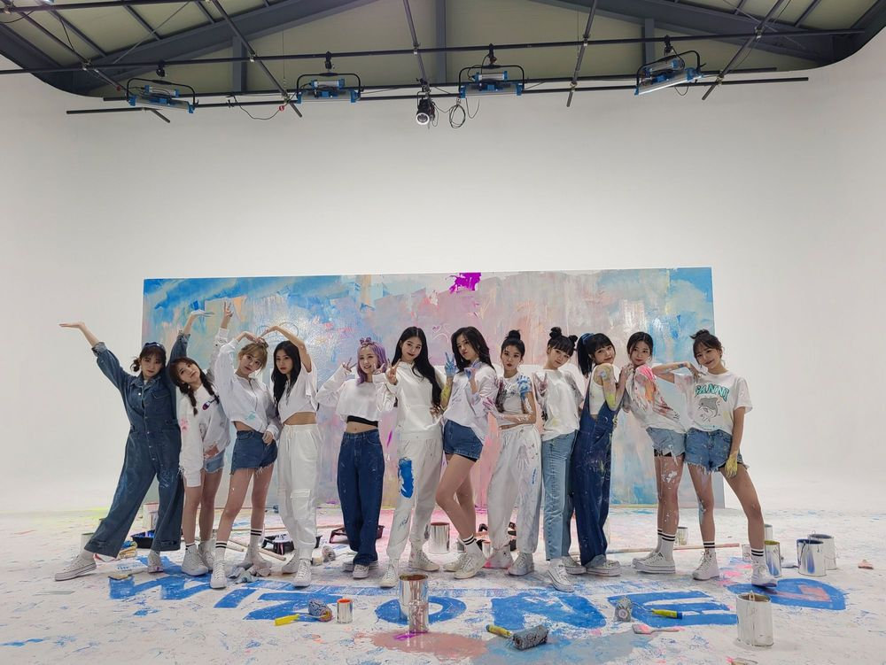

위즈원!! 그리고 이호!!
그동안 정말 정말 고마웠어ㅎㅎ 2년 반이라는 시간동안 이호한테 배운것도, 느낀것도, 고마운것도 너무 많아서 이호 나한텐 정말 선물 같은 존재야💓 나도 이호한테 그런 존재였으면 좋겠다☺️ 나의 일상이었던 것들이 조금씩 변할 것 같다고 생각하니 시원섭섭하지만.. 또 한편으로는 이게 영원한 안녕이 아니라 새로운 출발이니까! 이호 생각하면 또 설레는 것 같아 이호도 나랑 생각이 비슷하려나?🤍 아무튼ㅎㅎ 아이즈원하면서 우리 위즈원, 이호 한테 할 말을 한마디로 정해달라 그러면! 난 '너무너무 고마웠어 정말'
이거야 히힣 말하고 보니까 한마디가 아니지만.. 진심x100진심 곱하기 백이야!! 앞으로도 나랑 함께할 시간을 기대하면서 이호 설레는 날들만 가득하기를🌷💕
빛날 12명을, 원영이를 기다려줘🧡💛💖✨
